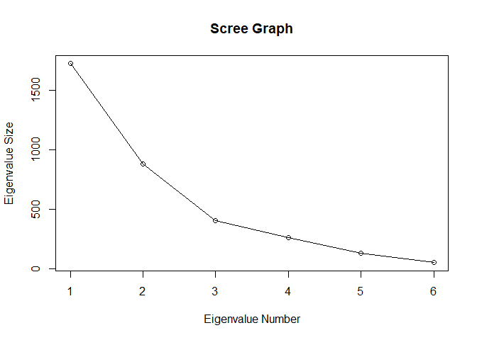
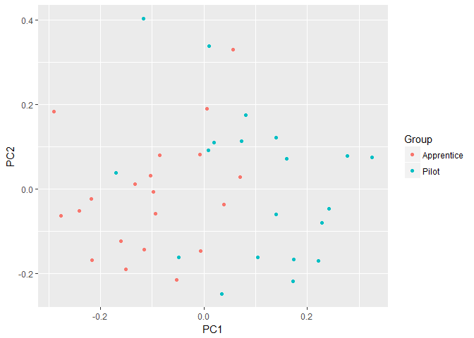
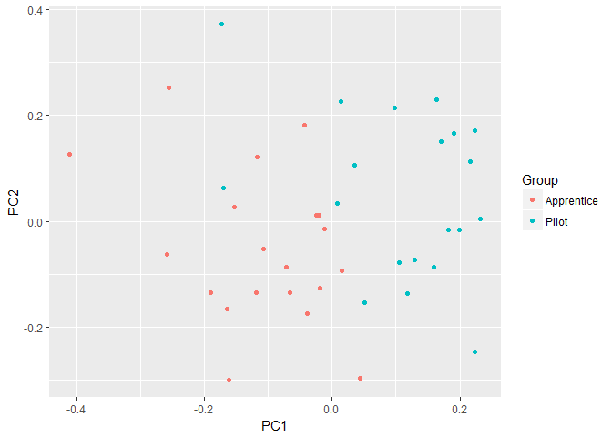

Often, it is not helpful or informative to only look at all the variables in a dataset for correlations or covariances. A preferable approach is to derive new variables from the original variables that preserve most of the information given by their variances. Principal component analysis is a widely used and popular statistical method for reducing data with many dimensions (variables) by projecting the data with fewer dimensions using linear combinations of the variables, known as principal components. The new projected variables (principal components) are uncorrelated with each other and are ordered so that the first few components retain most of the variation present in the original variables. Thus, PCA is also useful in situations where the independent variables are correlated with each other and can be employed in exploratory data analysis or for making predictive models. Principal component analysis can also reveal important features of the data such as outliers and departures from a multinormal distribution.
Defining Principal Components
The first step in defining the principal components of \(p\) original variables is to find a linear function \(a_1'y\), where \(a_1\) is a vector of \(p\) constants, for the observation vectors that have maximum variance. This linear function is defined as:
Principal component analysis continues to find a linear function \(a_2'y\) that is uncorrelated with \(a_1'y\) with maximized variance and so on up to \(k\) principal components.
Derivation of Principal Components
The principal components of a dataset are obtained from the sample covariance matrix \(S\) or the correlation matrix \(R\). Although principal components obtained from \(S\) is the original method of principal component analysis, components from \(R\) may be more interpretable if the original variables have different units or wide variances (Rencher 2002, pp. 393). For now, \(S\) will be referred to as \(\Sigma\) (denotes a known covariance matrix) which will be used in the derivation.
The goal of the derivation is to find \(a'_ky\) that maximizes the variance of \(a'_ky \Sigma a_k\). For this, we will consider the first vector \(a'_1y\) that maximizes \(Var(a'_1y) = a'_1y \Sigma a_1\). To do this maximization, we will need a constraint to rein in otherwise unnecessarily large values of \(a_1\). The constraint in this example is the unit length vector \(a_1' a_1 = 1\). This constraint is employed with a Lagrange multiplier \(\lambda\) so that the function is maximized at an equality constraint of \(g(x) = 0\). Thus the Lagrangian function is defined as:
Brief Aside: Lagrange Multipliers
The Lagrange mulitiplier method is used for finding a maximum or minimum of a multivariate function with some constraint on the input values. As we are interested in maximization, the problem can be briefly stated as 'maximize \(f(x)\) subject to \(g(x) = c\)'. In this example, \(g(x) = a_1'y a_1 = 1\) and \(f(x) = a_1'y \Sigma a_1\). The Lagrange multiplier, defined as \(\lambda\) allows the combination of \(f(x)\) and \(g(x)\) into a new function \(L(x, \lambda)\), defined as:
The sign of \(\lambda\) can be positive or negative. The new function is then solved for a stationary point, in this case \(0\), using partial derivatives:
Returning to principal component analysis, we differentiate \(L(a_1) = a'_1 \Sigma a_1 - \lambda(a_1'y a_1 - 1)\) with respect to \(a_1\):
Expressing the above with an identity matrix, \(I\):
Which shows \(\lambda\) is an eigenvector of the covariance matrix \(\Sigma\) and \(a_1\) is the corresponding eigenvector. As stated previously, we are interested in finding \(a_1'y\) with maximum variance. Therefore \(\lambda\) must be as large as possible which follows \(a_1\) is the eigenvector corresponding to the largest eigenvalue of \(\Sigma\).
The remaining principal components are found in a similar manner and correspond to the \(k\)th principal component. Thus the second principal component is \(a_2'y\) and is equivalent to the eigenvector of the second largest eigenvalue of \(\Sigma\), and so on.
Principal Component Analysis
Twenty engineer apprentices and twenty pilots were given six tests. The data were obtained from the companion FTP site of the book Methods of Multivariate Analysis by Alvin Rencher. The tests measured the following attributes:
- Intelligence
- Form Relations
- Dynamometer
- Dotting
- Sensory Motor Coordination
- Perservation
Principal component analysis will be performed on the data to transform the attributes into new variables that will hopefully be more open to interpretation and allow us to find any irregularities in the data such as outliers.
Load the data and name the columns. The factors in the Group column
are renamed to their actual grouping names.
pilots <- read.table('PILOTS.DAT', col.names = c('Group', 'Intelligence', 'Form Relations',
'Dynamometer', 'Dotting', 'Sensory Motor Coordination',
'Perservation'))
pilots$Group <- ifelse(pilots$Group == 1, 'Apprentice', 'Pilot')
Inspect the first few rows of the data.
head(pilots)
## Group Intelligence Form.Relations Dynamometer Dotting
## 1 Apprentice 121 22 74 223
## 2 Apprentice 108 30 80 175
## 3 Apprentice 122 49 87 266
## 4 Apprentice 77 37 66 178
## 5 Apprentice 140 35 71 175
## 6 Apprentice 108 37 57 241
## Sensory.Motor.Coordination Perservation
## 1 54 254
## 2 40 300
## 3 41 223
## 4 80 209
## 5 38 261
## 6 59 245
The variables appear to be measured in different units which may lead to the variables with larger variances dominating the principal components of the covariance matrix \(S\). We will perform principal component analysis on the correlation matrix \(R\) later in the example to find a scaled and more balanced representation of the components.
Find the covariance matrix \(S\) of the data. The grouping column is not included.
S <- cov(pilots[,2:7])
S
## Intelligence Form.Relations Dynamometer
## Intelligence 528.19487 35.98974 27.97949
## Form.Relations 35.98974 68.91282 -12.09744
## Dynamometer 27.97949 -12.09744 145.18974
## Dotting 104.42821 -81.75128 128.88205
## Sensory.Motor.Coordination -20.03077 -33.00513 -30.85641
## Perservation 291.15385 -18.28205 29.38462
## Dotting Sensory.Motor.Coordination
## Intelligence 104.42821 -20.03077
## Form.Relations -81.75128 -33.00513
## Dynamometer 128.88205 -30.85641
## Dotting 1366.43013 -113.58077
## Sensory.Motor.Coordination -113.58077 264.35641
## Perservation 395.18590 -79.85897
## Perservation
## Intelligence 291.15385
## Form.Relations -18.28205
## Dynamometer 29.38462
## Dotting 395.18590
## Sensory.Motor.Coordination -79.85897
## Perservation 1069.11538
The total variance is defined as:
Which is also equal to the sum of the eigenvalues of \(S\).
sum(diag(S))
## [1] 3442.199
Compute the eigenvalues and corresponding eigenvectors of \(S\).
s.eigen <- eigen(S)
s.eigen
## eigen() decomposition
## $values
## [1] 1722.0424 878.3578 401.4386 261.0769 128.9051 50.3785
##
## $vectors
## [,1] [,2] [,3] [,4] [,5]
## [1,] -0.21165160 -0.38949336 0.88819049 0.03082062 -0.04760343
## [2,] 0.03883125 -0.06379320 0.09571590 -0.19128493 -0.14793191
## [3,] -0.08012946 0.06602004 0.08145863 -0.12854488 0.97505667
## [4,] -0.77552673 0.60795970 0.08071120 0.08125631 -0.10891968
## [5,] 0.09593926 -0.01046493 0.01494473 0.96813856 0.10919120
## [6,] -0.58019734 -0.68566916 -0.43426141 0.04518327 0.03644629
## [,6]
## [1,] 0.10677164
## [2,] -0.96269790
## [3,] -0.12379748
## [4,] -0.06295166
## [5,] -0.20309559
## [6,] -0.03572141
The eigenvectors represent the principal components of \(S\). The eigenvalues of \(S\) are used to find the proportion of the total variance explained by the components.
for (s in s.eigen$values) {
print(s / sum(s.eigen$values))
}
## [1] 0.5002739
## [1] 0.2551734
## [1] 0.1166227
## [1] 0.07584597
## [1] 0.03744848
## [1] 0.01463556
The first two principal components account for 75.5% of the total variance. A scree graph of the eigenvalues can be plotted to visualize the proportion of variance explained by each subsequential eigenvalue.
plot(s.eigen$values, xlab = 'Eigenvalue Number', ylab = 'Eigenvalue Size', main = 'Scree Graph')
lines(s.eigen$values)

The elements of the eigenvectors of \(S\) are the 'coefficients' or 'loadings' of the principal components.
s.eigen$vectors
## [,1] [,2] [,3] [,4] [,5]
## [1,] -0.21165160 -0.38949336 0.88819049 0.03082062 -0.04760343
## [2,] 0.03883125 -0.06379320 0.09571590 -0.19128493 -0.14793191
## [3,] -0.08012946 0.06602004 0.08145863 -0.12854488 0.97505667
## [4,] -0.77552673 0.60795970 0.08071120 0.08125631 -0.10891968
## [5,] 0.09593926 -0.01046493 0.01494473 0.96813856 0.10919120
## [6,] -0.58019734 -0.68566916 -0.43426141 0.04518327 0.03644629
## [,6]
## [1,] 0.10677164
## [2,] -0.96269790
## [3,] -0.12379748
## [4,] -0.06295166
## [5,] -0.20309559
## [6,] -0.03572141
The first two principal components are thus:
Principal Component Analysis with R
Computing the principal components in R is straightforward with the
functions prcomp() and princomp(). The difference between the two is
simply the method employed to calculate PCA. According to ?prcomp:
The calculation is done by a singular value decomposition of the (centered and possibly scaled) data matrix, not by using eigen on the covariance matrix. This is generally the preferred method for numerical accuracy.
From ?princomp:
The calculation is done using eigen on the correlation or covariance matrix, as determined by cor. This is done for compatibility with the S-PLUS result.
pilots.pca <- prcomp(pilots[,2:7])
pilots.pca
## Standard deviations (1, .., p=6):
## [1] 41.497499 29.637102 20.035932 16.157875 11.353640 7.097781
##
## Rotation (n x k) = (6 x 6):
## PC1 PC2 PC3 PC4
## Intelligence 0.21165160 -0.38949336 0.88819049 -0.03082062
## Form.Relations -0.03883125 -0.06379320 0.09571590 0.19128493
## Dynamometer 0.08012946 0.06602004 0.08145863 0.12854488
## Dotting 0.77552673 0.60795970 0.08071120 -0.08125631
## Sensory.Motor.Coordination -0.09593926 -0.01046493 0.01494473 -0.96813856
## Perservation 0.58019734 -0.68566916 -0.43426141 -0.04518327
## PC5 PC6
## Intelligence -0.04760343 -0.10677164
## Form.Relations -0.14793191 0.96269790
## Dynamometer 0.97505667 0.12379748
## Dotting -0.10891968 0.06295166
## Sensory.Motor.Coordination 0.10919120 0.20309559
## Perservation 0.03644629 0.03572141
Although we didn't use the preferred method of applying singular value
decomposition, the components reported by the prcomp() are the same as
what was computed earlier save arbitrary scalings of \(-1\) to some of the
eigenvectors.
The summary method of prcomp() also outputs the proportion of variance
explained by the components.
summary(pilots.pca)
## Importance of components:
## PC1 PC2 PC3 PC4 PC5 PC6
## Standard deviation 41.4975 29.6371 20.0359 16.15788 11.35364 7.09778
## Proportion of Variance 0.5003 0.2552 0.1166 0.07585 0.03745 0.01464
## Cumulative Proportion 0.5003 0.7554 0.8721 0.94792 0.98536 1.00000
Plotting of Principal Components
The first two principal components are often plotted as a scatterplot which may reveal interesting features of the data, such as departures from normality, outliers or non-linearity. The first two principal components are evaluated for each observation vector and plotted.
The ggfortify
package
provides a handy method for plotting the first two principal components
with autoplot().
library(ggfortify)
The autoplot() function also generates a useful data table of the
calculated principal components we which we will use later.
pca.plot <- autoplot(pilots.pca, data = pilots, colour = 'Group')
pca.plot

The points of the two groups are clustered for the most part; however, the three points at the top of the graph may be outliers. The data does not appear to depart widely from multivariate normality. We will see if this conclusion changes when the PCs from the correlation matrix \(R\) are plotted.
To recreate the graph generated by autoplot(), scale the data using
the standard deviations of the principal components multiplied by the
square root of the number of observations. The principal components are
then computed for each observation vector. Note the first eigenvector is
multiplied by a scaling factor of \(-1\) so the signs what was reported by
the prcomp() function.
scaling <- pilots.pca$sdev[1:2] * sqrt(nrow(pilots))
pc1 <- rowSums(t(t(sweep(pilots[,2:7], 2 ,colMeans(pilots[,2:7]))) * s.eigen$vectors[,1] * -1) / scaling[1])
pc2 <- rowSums(t(t(sweep(pilots[,2:7], 2, colMeans(pilots[,2:7]))) * s.eigen$vectors[,2]) / scaling[2])
Collect the PCs in a data.frame and plot using ggplot (loaded when
ggfortify was loaded).
df <- data.frame(pc1, pc2, c(rep('Apprentice', 20), rep('Pilot', 20)))
colnames(df) <- c('PC1', 'PC2', 'Group')
ggplot(df, aes(x=PC1, y=PC2, color=Group)) +
geom_point()

The scaling employed when calculating the PCs can be omitted. To remove
scaling in the autplot() function, set the scaling argument to 0.
Principal Component Analysis with the Correlation Matrix \(R\)
As mentioned previously, although principal component analysis is typically performed on the covariance matrix \(S\), it often makes more intuitive sense to apply PCA to the correlation matrix. Cases where using \(R\) may be preferable to \(S\) include data that is measured in different units or has wide variances. The pilot data analyzed does not appear to have commensurate units for each variable, and because we have very little information regarding the tests and the measurements collected, it might make sense to employ the \(R\) matrix rather than \(S\).
The correlation matrix is found with the cor() function.
R <- cor(pilots[,2:7])
R
## Intelligence Form.Relations Dynamometer
## Intelligence 1.00000000 0.18863907 0.10103566
## Form.Relations 0.18863907 1.00000000 -0.12094150
## Dynamometer 0.10103566 -0.12094150 1.00000000
## Dotting 0.12292126 -0.26641020 0.28935484
## Sensory.Motor.Coordination -0.05360504 -0.24453244 -0.15750071
## Perservation 0.38744776 -0.06735388 0.07458298
## Dotting Sensory.Motor.Coordination
## Intelligence 0.1229213 -0.05360504
## Form.Relations -0.2664102 -0.24453244
## Dynamometer 0.2893548 -0.15750071
## Dotting 1.0000000 -0.18898014
## Sensory.Motor.Coordination -0.1889801 1.00000000
## Perservation 0.3269606 -0.15021611
## Perservation
## Intelligence 0.38744776
## Form.Relations -0.06735388
## Dynamometer 0.07458298
## Dotting 0.32696061
## Sensory.Motor.Coordination -0.15021611
## Perservation 1.00000000
Find the eigenvalues and eigenvectors of the \(R\) matrix.
r.eigen <- eigen(R)
As with the covariance matrix, we can compute the proportion of total variance explained by the eigenvalues.
for (r in r.eigen$values) {
print(r / sum(r.eigen$values))
}
## [1] 0.2958546
## [1] 0.225736
## [1] 0.1787751
## [1] 0.1357993
## [1] 0.08843547
## [1] 0.07539955
What is readily noticeable is the first eigenvalue accounts for 30% of total variance compared with 50% of the variance of the \(S\) matrix. The first two components of \(R\) only account for 52% of total variance while the last two components have little significance. Thus, one may want to keep the first four components rather than the first two or three with the \(S\) matrix.
To perform principal component analysis using the correlation matrix
using the prcomp() function, set the scale argument to TRUE.
pilots.pca.scaled <- prcomp(pilots[,2:7], scale = TRUE)
pilots.pca.scaled
## Standard deviations (1, .., p=6):
## [1] 1.3323392 1.1637937 1.0356884 0.9026604 0.7284317 0.6726049
##
## Rotation (n x k) = (6 x 6):
## PC1 PC2 PC3 PC4
## Intelligence 0.40239072 -0.3964661 0.4617841 -0.3928149
## Form.Relations -0.09715877 -0.7472294 -0.1752970 -0.1315611
## Dynamometer 0.38541311 0.2181560 -0.4329575 -0.7177525
## Dotting 0.54333623 0.3144601 -0.1065065 0.2453920
## Sensory.Motor.Coordination -0.31188931 0.3559400 0.6268314 -0.3992852
## Perservation 0.53629229 -0.1062657 0.4053555 0.3058981
## PC5 PC6
## Intelligence -0.2103062 -0.5187674
## Form.Relations -0.2801896 0.5528697
## Dynamometer 0.2585104 0.1855163
## Dotting -0.7066663 0.1869825
## Sensory.Motor.Coordination -0.2012981 0.4279773
## Perservation 0.5201339 0.4155385
summary(pilots.pca.scaled)
## Importance of components:
## PC1 PC2 PC3 PC4 PC5 PC6
## Standard deviation 1.3323 1.1638 1.0357 0.9027 0.72843 0.6726
## Proportion of Variance 0.2959 0.2257 0.1788 0.1358 0.08844 0.0754
## Cumulative Proportion 0.2959 0.5216 0.7004 0.8362 0.92460 1.0000
Plot the first two PCs of the correlation matrix using the autoplot()
function.
pca.plot.scaled <- autoplot(pilots.pca.scaled, data = pilots, colour = 'Group')
pca.plot.scaled

The points remain clustered for the most part; however, there does appear to be more points outside that may be considered outliers, though they don't appear to be too far off from the cluster. It is important to remember the first two PCs of the \(R\) matrix only represent 52% of the total variance and thus may not be fully representative of the variance in the dataset.
Interpreting Principal Components
Interpretation of principal components is still a heavily researched topic in statistics, and although the components may be readily interpreted in most settings, this is not always the case (Joliffe, 2002).
One method of interpretation of the principal components is to calculate
the correlation between the original data and the component. The
autoplot() function also generates a nice data table with the original
variables and the calculated PCs, which we will use here to find the
correlations.
First, compute the correlations between the data and the calculated components of the covariance matrix \(S\).
comps <- pca.plot$data[,c(1:2,4:13)]
cor(comps[,3:8], comps[,c(1:2,9)])
## PC1 PC2 PC3
## Intelligence 0.3821610 -0.50227170 0.77431660
## Form.Relations -0.1941124 -0.22775091 0.23101683
## Dynamometer 0.2759600 0.16238412 0.13544989
## Dotting 0.8706127 0.48743512 0.04374714
## Sensory.Motor.Coordination -0.2448631 -0.01907555 0.01841632
## Perservation 0.7363518 -0.62149561 -0.26610222
The PCs can then be interpreted based on which variables they are most correlated in either a positive or negative direction. The level at which the correlations are significant is left to the researcher.
The first component is positively correlated with Dotting, Perservation, Intelligence and Dynamometer. This correlation suggests the five variables vary together and when one goes down, the others decrease as well. The component is most correlated with Dotting at \(.087\) and could be considered as primarily a measure of Dotting.
The second component is most correlated with Perservation and Intelligence, both in a negative direction. Dotting is correlated with the second component in a positive direction, which would indicate that as Perservation and Intelligence decrease, Dotting increases.
The third component is primarily correlated with Intelligence and not much else. This component could be viewed as a measure of the intelligence of the individual apprentice or pilot.
It was decided previously that due to lack of information regarding the variables and their units of measurement, it makes more sense to use the correlation matrix \(R\) for performing principal component analysis. Let's see how the interpretation of the principal components changes when we use the \(R\) matrix.
comps.scaled <- pca.plot.scaled$data[,c(1:2,4:13)]
cor(comps.scaled[,3:8], comps.scaled[,c(1:2,9)])
## PC1 PC2 PC3
## Intelligence 0.5361209 -0.4614047 0.4782644
## Form.Relations -0.1294484 -0.8696209 -0.1815530
## Dynamometer 0.5135010 0.2538886 -0.4484090
## Dotting 0.7239081 0.3659667 -0.1103075
## Sensory.Motor.Coordination -0.4155423 0.4142408 0.6492020
## Perservation 0.7145232 -0.1236713 0.4198220
The most apparent changes between the correlations of the original variables and the PCs of the \(S\) and \(R\) matrices are in components 2 and 3. The first principal component is still strongly correlated with the variables Dotting and Perservation, but now the variables Intelligence and Dynamometer are much more correlated and could indicate that as the former two variables decrease, the latter two increase.
The second component is now correlated the most with Forming Relations and not much else, whereas with the \(S\) matrix the component was correlated more to Perservation and Intelligence. This difference in variable correlations between the components of the two matrices may indicate Perservation and Intelligence were unduly dominating the variances.
The third component is now most correlated with Sensory Motor Coordination and secondarily Intelligence and Perservation, which indicates that subjects with high Sensory Motor Coordination test scores also have higher Intelligence and Perservation scores.
Summary
This post ended up being much longer than I had anticipated but I hope it is a good introduction to the power and benefits of principal component analysis. The post covered PCA with the covariance and correlation matrices as well as plotting and interpreting the principal components. I plan to continue discussing PCA in the future as there are many more topics and applications related to the dimension reduction technique.
References
Joliffe, I. T. (2002). Principal Component Analysis (2nd ed.). Springer.
Rencher, A. C. (2002). Methods of multivariate analysis. New York: J. Wiley.
https://onlinecourses.science.psu.edu/stat505/node/54